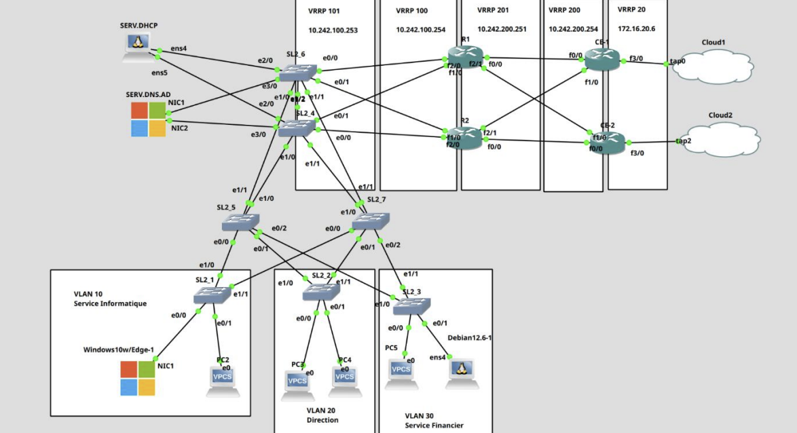
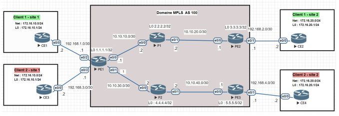

Maîtrise des solutions de connexion complexes des entreprises et opérateurs en 2ème année.
AC22.01 : Déployer et caractériser des systèmes de transmissions complexes.
Introduction : Les réseaux modernes reposent sur des chaînes de transmission dont la complexité dépasse le simple câblage. Comprendre comment un signal est modulé, transporté, puis restitué et savoir caractériser les pertes et défauts sur ce chemin est une compétence fondamentale pour tout technicien en réseaux et télécommunications.
Cette année, j'ai étudié les transmissions numériques avancées à travers les modules R3.05 et R3.06 ainsi que la SAÉ 3.01, passant du signal brut à la chaîne de transmission complète et comprenant l'impact des imperfections sur la qualité du service.
En R3.05, j'ai travaillé sur les modulations numériques : la QAM combine amplitude et phase pour transmettre plusieurs bits par symbole, la PSK (BPSK, QPSK) est utilisée dans les systèmes à contraintes de robustesse, et l'OFDM constitue la brique de base des réseaux WiFi et 4G/5G en divisant le canal en sous-porteuses orthogonales résistantes aux trajets multiples.
Les TD de R3.05 m'ont permis de simuler sous MATLAB et Scilab des chaînes de transmission réelles. Nous avons reproduit le cryptage sonore de Canal+ : une modulation AM à 12 800 Hz inverse le spectre audio, rendant le son inintelligible sans décodeur. J'ai observé le retournement spectral, le phénomène de repliement et implémenté le filtre passe-bas nécessaire. Le TD sur le récepteur superhétérodyne WiFi 802.11b a approfondi ma compréhension des architectures radio : le signal est amplifié par un LNA, transposé en fréquence intermédiaire via OL2, puis converti en bande de base pour produire les composantes I et Q nécessaires à la démodulation.
En R3.06, j'ai abordé les fibres optiques dans leur dimension opérationnelle : les trois fenêtres spectrales (850 nm, 1 300 nm, 1 550 nm), les fibres multimodes (OM1 à OM5) pour les datacenters, les fibres monomodes (G.652D, G.655, G.657) pour les longues distances et le FTTH. J'ai également étudié les sources lumineuses, à savoir le laser Fabry-Perot, le DFB et le VCSEL, ainsi que les modules SFP qui les encapsulent dans un format standardisé.
La réflectométrie OTDR a constitué un volet pratique essentiel. L'OTDR analyse les signaux rétrodiffusés pour identifier les événements sur la fibre (connecteurs, épissures, coupures). J'ai appris à interpréter les réflectogrammes, mesurer les pertes et comprendre la notion de zone morte : une impulsion courte donne une meilleure résolution spatiale mais moins de dynamique, tandis qu'une impulsion longue offre plus de dynamique au prix d'une zone aveugle plus grande d'où l'utilisation de bobines amorce pour mesurer les connecteurs d'extrémité.
R3.05 : Chaînes de transmissions numériques
R3.06 : Fibres optiques et propagation
R4.02 : Transmissions avancées
SAÉ 3.01 : Projet Prise Intelligente WiFi
AC22.02 : Mettre en place un accès distant sécurisé.
Introduction : Le télétravail et la mobilité ont transformé les exigences d'accès aux ressources d'entreprise. Permettre à un collaborateur de travailler à distance comme s'il était au bureau, tout en garantissant confidentialité et intégrité des données, repose sur des mécanismes cryptographiques robustes et une architecture réseau rigoureuse.
Dans le cadre du module R4.01, j'ai appris à concevoir et déployer des solutions d'accès distant sécurisé. La première étape a été de comprendre les enjeux cryptographiques : confidentialité, authentification, intégrité et non-répudiation des échanges.
Les tunnels VPN IPsec constituent la solution la plus répandue en entreprise. J'ai étudié et configuré IPsec dans ses deux phases : IKE qui établit un canal sécurisé pour l'échange de clés, et la phase IPsec qui chiffre les données applicatives. Les paramètres ont été choisis avec soin : chiffrement AES-256, hachage SHA-256/384, et échange Diffie-Hellman sur des groupes d'au moins 2 048 bits.
OpenVPN a été abordé comme alternative à IPsec, apprécié pour sa facilité de déploiement à travers les pare-feux NAT. J'ai configuré une infrastructure OpenVPN avec une autorité de certification interne, généré des certificats serveur et client, et mis en place l'authentification mutuelle par certificats, une méthode plus robuste qu'une simple authentification par mot de passe.
La SAÉ 3.03 a permis d'appliquer ces compétences en contexte réel. Les commutateurs Cisco ont été configurés pour n'accepter que des connexions SSH avec des algorithmes forts (aes128-ctr, aes192-ctr, aes256-ctr), excluant DES et 3DES. Clés RSA 2 048 bits, timeout de session et limitation des tentatives d'authentification ont été systématiquement appliqués.
J'ai également travaillé sur la gestion du cycle de vie des certificats : émission, distribution sécurisée, révocations et renouvellement avant expiration. La mise en place d'une CRL ou d'un service OCSP pour la vérification en temps réel de l'état des certificats fait partie des bonnes pratiques intégrées car un certificat révoqué mais encore accepté constituerait une faille majeure.
R4.01 : Infrastructures de sécurité
SAÉ 3.03 : Déploiement d'infrastructure LAN d'entreprise
AC22.03 : Mettre en place une connexion multisite via un réseau opérateur.
Introduction : Les entreprises multisites ont besoin d'une connectivité transparente entre leurs implantations. Plutôt que de gérer elles-mêmes une infrastructure WAN, elles s'appuient sur les opérateurs qui leur proposent des services d'interconnexion clés en main. Comprendre comment ces services sont architecturés est une compétence directement opérationnelle.
J'ai abordé l'interconnexion multisite sous deux angles : les solutions de routage IP que l'on déploie soi-même, et les services que les opérateurs mettent à disposition de leurs clients.
La SAÉ 3.03 a fourni le cadre pratique le plus concret. Deux routeurs CE-1 et CE-2 (Customer Edge) représentent les équipements d'extrémité de deux sites d'entreprise, connectés à un WAN opérateur simulé (172.16.20.0/29). OSPF assure la propagation des routes entre sites, avec redistribution de routes statiques pour atteindre des destinations hors du domaine dynamique, un mécanisme courant dans les environnements où coexistent plusieurs protocoles de routage.
Le module R3.02 m'a permis d'étudier MPLS (Multiprotocol Label Switching), sur lequel reposent la plupart des VPN opérateur actuels. MPLS insère une étiquette numérique entre couche liaison et couche réseau : les routeurs P (Provider) commutent les paquets sur cette étiquette sans inspecter l'IP, tandis que les routeurs PE (Provider Edge) imposent et retirent ces étiquettes aux bordures du réseau.
L'architecture MPLS L3VPN permet à un opérateur d'offrir des VPN de niveau 3 à plusieurs clients sur la même infrastructure physique, avec isolation totale. Chaque client dispose d'une VRF (Virtual Routing and Forwarding) dédiée sur les routeurs PE, et les routes sont transportées via MP-BGP avec des route targets qui garantissent qu'aucun client ne peut accéder aux ressources d'un autre, même avec des espaces d'adressage identiques.
J'ai simulé ces architectures sous GNS3 avec une topologie opérateur complète (routeurs P, PE, plusieurs clients VPN) et vérifié l'isolation effective entre clients. Cette pratique a ancré des concepts qui restent abstraits à la seule lecture de la documentation.

Fig. 3a : Topologie globale SAÉ 3.03 : routeurs CE-1/CE-2 connectés au WAN opérateur 172.16.20.0/29, avec redondance VRRP sur les bordures

Fig. 3b : Simulation GNS3 de l'architecture MPLS L3VPN : routeurs P/PE/CE avec isolation par VRF entre clients (module R3.02)
R3.02 : Réseaux opérateurs
R4.01 : Infrastructures de sécurité
SAÉ 3.03 : Déploiement d'infrastructure LAN d'entreprise
AC22.04 : Déployer des réseaux d'accès des opérateurs.
Introduction : Le réseau d'accès, ou "dernier kilomètre", relie l'abonné au réseau de collecte de l'opérateur. C'est le maillon le plus hétérogène de l'infrastructure : il doit desservir des millions d'abonnés avec des technologies variées selon les zones géographiques, les contraintes de déploiement et les débits ciblés.
En spécialité ROM, l'étude des réseaux d'accès est centrale dans la formation, et cette année a représenté une montée en compétence significative sur ce sujet.
Sur le plan des accès filaires, j'ai étudié les technologies xDSL utilisant la boucle locale cuivre. Le DSLAM concentre les liaisons DSL et les agrège vers le réseau de collecte en fibre. Les limites physiques de ces technologies, à savoir l'atténuation avec la distance et la sensibilité à la diaphonie, expliquent la transition massive des opérateurs vers la fibre jusqu'à l'abonné.
Les architectures FTTx ont été étudiées dans leur diversité : FTTH (jusqu'au logement), FTTB (en pied d'immeuble), FTTO (pour les entreprises). L'architecture GPON qui sous-tend les déploiements FTTH français repose sur un partage passif de la fibre via des coupleurs optiques : un OLT opérateur dessert jusqu'à 64 ONT abonnés sur une seule fibre grâce au multiplexage temporel. La fibre G.657, tolérante aux faibles rayons de courbure, est adaptée aux contraintes résidentielles, et les connecteurs SC/APC sont systématiquement utilisés pour leur très faible réflectance.
La contamination des connecteurs, première cause de panne sur les réseaux optiques, a été illustrée en TP : un connecteur propre présente 0,25 dB de perte, contre 4,87 dB pour un connecteur sale, soit une dégradation de près de 20 fois. Les normes Orange FTTH imposent moins de 1 dB par connecteur et moins de 0,2 dB par épissure, justifiant un nettoyage systématique et l'usage de caches de protection.
Les réseaux mobiles ont été abordés via R3.07 et R4.04, de la 4G LTE à la 5G NSA/SA. En 4G, les eNodeB communiquent via X2 et remontent vers le cœur EPC via S1. En 5G, les gNB introduisent une séparation CU/DU/RU permettant la virtualisation du réseau. L'interface radio repose sur OFDM/OFDMA avec des largeurs de bande atteignant 100 MHz sous 6 GHz, ce qui permet les débits multi-gigabits de la 5G.
R3.06 : Fibres optiques et propagation
R3.07 : Réseaux d'accès
R4.04 : Réseaux cellulaires
AC22.05 : Capacité à questionner un cahier des charges RT.
Introduction : Un cahier des charges n'est jamais parfait : imprécisions, ambiguïtés, contraintes parfois contradictoires. Savoir le lire de façon critique, identifier ses lacunes et les lever par le dialogue avec le commanditaire est une compétence qui distingue un technicien expérimenté d'un simple exécutant.
Cette compétence s'est développée progressivement au fil des projets de l'année, chacun présentant un type de cahier des charges différent.
La SAÉ 3.01 "Prise Intelligente WiFi" présentait un cahier des charges riche à analyser. Il fallait distinguer les exigences fonctionnelles (commande ON/OFF depuis une interface web et Android, avec retour d'état), les contraintes non fonctionnelles (taille, consommation, coût) et les points laissés à notre discrétion. Le cahier listait des critères de sélection de composants sans les ordonner, et cette absence de priorité appelait une question directe au commanditaire : la réponse conditionne entièrement le choix technique entre un ESP8266 nu (priorité coût) ou un module Feather HUZZAH (priorité facilité de développement). Le mode AP pour la configuration initiale du WiFi illustrait le même principe : l'exigence fonctionnelle était claire, mais sa mise en œuvre laissait ouverte la question d'une interface web maison ou d'une bibliothèque dédiée comme WiFiManager.
La SAÉ 3.03 a présenté un cahier des charges réseau d'entreprise à valider avant toute configuration. La vérification du plan d'adressage IP, afin d'éviter le chevauchement des sous-réseaux, de garantir la cohérence des masques avec les besoins en hôtes, l'appartenance des passerelles à leurs sous-réseaux et la disponibilité des VIP VRRP, évite de passer des heures à déboguer des problèmes de routage dont la source est en réalité une erreur dans les spécifications.
La rédaction de dossiers techniques (R3.12, R3.15) contribue aussi à cette compétence : justifier ses choix par écrit oblige à vérifier leur cohérence avec le cahier des charges, et les incohérences passées inaperçues en conception deviennent souvent évidentes à la rédaction. Les TD de R3.05 ont illustré la même démarche sur les exercices de simulation : identifier les hypothèses implicites, vérifier leur validité et proposer la correction adaptée quand elles ne tiennent pas, une posture directement transposable à l'analyse d'un cahier des charges.